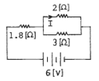
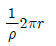
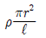
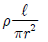
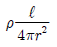

농기계정비기능사 (2007-09-16 기출문제)
1과목: 농기계정비
1. 관리기에 사용되는 클러치는?
- 마찰 클러치
- 맞물림 클러치
- 유체 클러치
- V벨트 클러치
(정답률: 55%)

2. 다음 중 열풍 건조기에 의한 전조 시의 건조과정이 올바른 것은?
- 건조→순환→템퍼링
- 순환→템퍼링→건조
- 건조→뜨임→순환
- 순환→건조→뜨임
(정답률: 70%)
3. 트랙터 기관의 압축 압력 시험에서 건식 시험 시 압축 압력이 낮게 검출되었으나, 습식 시험에서는 높게 검출되었을 경우 고장과 관계없는 것은?
- 피스톤의 마모
- 실린더 벽의 마모
- 밸브의 기밀유지 불량
- 피스톤 링의 마모
(정답률: 72%)
4. 지시 마력과 마찰마력을 알면 어떤 마력을 계산할 수 있는가?
- 공칭마력
- 손실마력
- 제동마력
- 카다로그 마력
(정답률: 58%)
5. 크랭크축 저널과 베어링의 마멸이 심하면 엔진 윤활 장치의 유압은?
- 올라간다.
- 내려간다.
- 어떤 영향도 받지 않는다.
- 내려갈 수도 있고 올라갈 수도 있다.
(정답률: 59%)
6. 동력 경운기 액슬 축에 설치된 허브 오일 실을 자주 교환하는 이유가 아닌 것은?
- 액슬 축의 휨이 클 때
- 허브 베어링이 마모 되었을 때
- 오일 실 립 첩촉부가 마모 되었을 때
- 최종구동 케이스 덮개 가스킷이 불량할 때
(정답률: 70%)
7. 다음은 엔진의 출력이 부족할 경우의 분해 정비시기를 정하는 요소를 든 것이다. 맞지 않는 것은?
- 가솔린의 소비율이 표준 소비율의 60% 이하
- 압축압력이 규정 압력의 70% 이하
- 냉각수의 소비율이 표준 소비율의 50% 이하
- 엔진오일의 소비율이 표준 소비율의 50% 이하
(정답률: 63%)
8. 경운기 주 클러치 레버가 절 위치에서 동력 전달이 개시되는 간격이 가장 적당한 것은?
- 1~5㎜
- 20~30㎜
- 50~60㎜
- 80~90㎜
(정답률: 82%)
9. 트랙터에서 앞바퀴를 조립할 때, 조종성이 확실하고 안정하게 하기 위해서는 앞바퀴가 옆으로 미끄러지거나 흔들려서는 안된다. 앞바퀴는 앞쪽에서 볼 때 아래쪽이 안쪽으로 적당한 각도로 기울어지도록 설치하는데 이것을 무엇이라 하는가?
- 킹핀의 각(King pin)
- 캐스터(Caster)
- 토우인(Toe-in)
- 캠버(Camber)
(정답률: 53%)
10. 기화기에 설치된 스로들 밸브(throttle valve)의 역할을 가장 바르게 설명한 것은?
- 연료의 무화촉진
- 기관의 출력조정
- 연료의 온도조절
- 공기흡입량 조절
(정답률: 37%)
11. 다음 중 트랙터 브레이크 페달이 발판에 닿는 원인으로 맞는 것은?
- 브레이크 오일 질이 나쁘다.
- 타이어의 공기압이 고르지 않다.
- 라이닝과 드럼 사이에 오일이 묻어 있다.
- 브레이크 파이프 내에 공기가 들어 있거나 오일이 부족하다.
(정답률: 68%)
12. 트랙터의 유압장치 중 피스톤이 양쪽 면으로 작용하여 작업기의 상승 및 하강을 모두 유압으로 조정하는 장치는?
- 단동식 유압장치
- 복동식 유압장치
- 3연식 유압장치
- 4연식 유압장치
(정답률: 61%)
13. 부식, 베어링, 오일구멍 및 얼라이먼트를 점검하는 것은 기관의 어느 부분인가?
- 피스톤
- 실린더
- 크랭크축
- 커넥팅로드
(정답률: 58%)
14. 파종기의 배종장치에서 배종량을 조절하려면 어떤 부분의 크기를 조절해야 되는가?
- 배종판
- 수종관
- 배종케이스
- 배종구멍
(정답률: 58%)
15. 수냉식 디젤 경운기의 경우, 변속기를 완전분해 조립하여 주변속레버를 넣어본 결과 5, 6단 기어가 들어가지 않는다. 어떤 기어를 잘못 조립하였는가? (단, 다른 부분에는 이상이 없다.)
- 주축기어
- 주변속기어
- 부변속기어
- 중간축기어
(정답률: 52%)
16. 트랙터가 습지에 한쪽 바퀴가 빠졌을 시 사용하는 장치는?
- 클러치
- 차동 장치
- 차동 잠금장치
- 최종 감속장치
(정답률: 76%)
17. 배낭식 미스트기의 이상폭발 또는 역화의 원인이다. 틀린 것은?
- 기화기의 불량
- 흡입판 밸브의 개폐불량
- 쵸크밸브의 완전개방
- 플러그의 과열
(정답률: 45%)
18. 동력 경운기의 경우 운전 중 기관은 가동되고 있으나 갑자기 한쪽 차륜이 서고 기체가 돌려고 할 때의 주요 원인은?
- 주클러치의 고장
- 변속기의 고장
- 조향클러치의 고장
- 타이어의 공기압 부족
(정답률: 54%)
19. 경운기 밋션 내부에는 어떠한 것이 장치되어 있는가?
- 조향 포크
- 주클러치 레버
- 경운변속 레버
- 주변속 레버
(정답률: 23%)
20. 엔진오일 선택 시 주의사항으로 틀린 것은?
- 점도가 적당해야 한다.
- 점도 지수가 작아야 한다.
- 산화 저항성이 커야 한다.
- 저온에서도 유동성이 좋아야 한다.
(정답률: 48%)
2과목: 농기계전기
21. 동력경운기를 정비하는데 불필요한 것은?
- 토인
- 팬벨트
- V벨트
- 타이어 공기압
(정답률: 50%)
22. 트랙터에 로터리를 장착하고 작업을 할 때에 유니버셜 죠인트가 잘 빠져 나오지 않는 경우는 어느 것인가?
- 로터리의 좌우로 수평 균형 조절이 잘 안되었다.
- 로터리를 중앙에 위치하게 하고, 체크 체인을 당기어 조립하였다.
- 로터리를 편중되게 장착시켰다.
- 유니버셜 죠인트의 키를 정확히 끼우지 않았다.
(정답률: 49%)
23. 엔진의 압축행정과 팽창행정에서 실린더와 피스톤의 간극으로부터 크랭크 케이스에 빠져나오는 현상은?
- 블로다운
- 블로 백
- 블로바이
- 베이퍼록
(정답률: 59%)
24. 콤바인에서 탈립작용의 구성요소에 속하지 않는 것은?
- 금치
- 요동체
- 수망
- 급동
(정답률: 39%)
25. 워트 펌프(water pump)의 역할로 맞는 것은?
- 바람을 일으켜 냉각을 돕는다.
- 라디에이터의 온도를 상승시킨다.
- 엔진 내에서 냉각수를 순환시킨다.
- 엔진을 정상적인 온도로 유지시킨다.
(정답률: 67%)
26. 일반적으로 동력경운기 기관의 정격회전수는?
- 1200rpm
- 2200rpm
- 3200rpm
- 4200rpm
(정답률: 60%)
27. 트랙터용 원판형 플라우의 원판각과 경사각은 각각 얼마로 조절하면 좋은가?
- 원판각 50°, 경사각 30°
- 원판각 25°, 경사각 45°
- 원판각 20°, 경사각 40°
- 원판각 45°, 경사각 20°
(정답률: 47%)
28. 동력경운기의 제동 장치에 관한 설명으로 틀린 것은?
- 마찰력으로 제동된다.
- 내부 확장식 브레이크이다.
- 브레이크와 주클러치는 레버가 다르다.
- 브레이크 드럼에는 오일이 채워져 있다.
(정답률: 67%)
29. 다음 중 시비기를 장착하여 파종과 시비작업을 동시에 할 수 있는 것은?
- 산파기
- 점파기
- 혼파기
- 조파기
(정답률: 69%)
30. 트랙터용 로터리를 부착할 때 점검 조정 사항이 아닌 것은?
- 히치부 점검 조정
- 로터리 날 배열 점검 조정
- 3점 링크 점검 조정
- 유압 작동레버 점검 조정
(정답률: 52%)
31. 10회 감은 권선에 2초 사이에 10[Wb] 자속이 통과하면 권선에 발생되는 유도 기전력은 몇 [V] 인가?
- 25
- 30
- 50
- 75
(정답률: 28%)
32. 내연 기관의 전기점화 방식에서 불꽃을 일으키는 1차 유도 전류를 일시적으로 흡수 저장하는 역할을 하는 것은?
- 진각장치
- 단속기
- 콘덴서
- 배전자
(정답률: 61%)
33. 다음 중 전조등(헤드라이트)의 시험 전 상태가 바르지 못한 것은?
- 전구가 바르게 설치되어 있어야 한다.
- 렌즈나 반사경이 정상이어야 한다.
- 설치장소가 수평이어야 한다.
- 타이어 공기 압력을 규정보다 약하게 되어 있어야 한다.
(정답률: 45%)
34. 1[C]의 전기량이 이동할 때, 1[J]의 일을 하면?
- 전위차가 1[V]이다.
- 전류가 1[A] 흐른다.
- 저항이 1[Ω]이다.
- 전력이 1[W]이다.
(정답률: 49%)
35. 고속기관에 열형(hot type) 플러그를 사용하면 일어나는 현상이 아닌 것은?
- 후기점화
- 조기점화
- 플러그과열
- 이상폭발
(정답률: 64%)
36. 온도가 내려가면 축전지에서 일어나는 현상 중 틀린 것은?
- 전압이 내려간다.
- 용량이 내려간다.
- 전해액의 비중이 내려간다.
- 동결하기 쉽다.
(정답률: 18%)
37. DC 발전기에서 출력이 나오지 않는 원인이 아닌 것은?
- 정류자의 소손
- 전기자의 단락
- 브러시의 고장
- 유도자 코일의 단선
(정답률: 16%)
38. 보안장치 중 경보기(horn)에서 나오는 소리의 세기를 나타내는 단위로 적합한 것은?
- 데시벨[dB]
- 미리바[m-bar]
- 헤르츠[Hz]
- 룩스[lx]
(정답률: 83%)
39. 다음 중 회로시험기(테스터)로 측정할 수 없는 것은?
- 직류 전류[A]
- 직류 전압[A]
- 저항[Ω]
- 전력[W]
(정답률: 68%)
40. 4[A]로 연속 방전하여 방전종지전압에 이를 때까지 20시간이 소요되었다. 이 축전지의 용량은?
- 200[Ah]
- 150[Ah]
- 80[Ah]
- 40[Ah]
(정답률: 60%)
3과목: 농기계안전관리
41. 다음 중 엔진 시동 시 기동전동기의 허용 연속사용 시간이 가장 적합한 것은?
- 2~3분
- 1~2분
- 40~50초
- 10~15초
(정답률: 80%)
42. 농업용 기계에서 전기 배선작업을 할 때 주의해야 할 사항으로 옳지 않은 것은?
- 배선 작업하는 곳은 건조해야 한다.
- 배선을 차단 할 때는 우선 접지선을 떼고 차단한다.
- 배선을 연결 할 때에는 접지선을 먼저 연결한다.
- 배선 작업에서 접속과 차단은 빨리하는 것이 좋다.
(정답률: 53%)
43. 다음 중 농용 트랙터에서 전기회로가 주로 접지되는 곳은?
- 프레임
- 엔진
- 뒤차축
- 발전기
(정답률: 48%)
44. 그림에서 2[Ω]에 흐르는 전류 I[A]는?

- 0.8
- 1.0
- 1.2
- 2.0
(정답률: 40%)
45. 고유저항 ρ, 길이 ℓ, 지름 r인 전선의 저항은?




(정답률: 48%)
46. 작업 중 반드시 작업복과 가죽제 앞치마를 사용하여야 하는 작업은?
- 선반 작업
- 연삭 작업
- 용접 작업
- 목공 작업
(정답률: 96%)
47. 다음 중 보통작업에 적합한 이상적인 조명도로 알맞은 것은?
- 50럭스 이상
- 90럭스 이상
- 120럭스 이상
- 150럭스 이상
(정답률: 63%)
48. 다음 중 근로자의 의무사항에 해당 되지 않는 것은?
- 보호구 착용
- 위험장소에의 출입금지
- 안전규칙준수
- 작업중단
(정답률: 46%)
49. 보호안경을 착용해야 할 작업으로 다음 중 가장 적당한 것은?
- 기화기를 차에서 뗄 때
- 변속기를 차에서 뗄 때
- 장마철 노상운전을 할 때
- 배전기를 차에서 뗄 때
(정답률: 44%)
50. 연삭숫돌을 고정할 때 주의할 사항이 아닌 것은?
- 숫돌차는 정확히 평행하도록 끼운다.
- 나무해머로 숫돌차를 가볍게 두드려 상처의 유무를 확인 한다.
- 플랜지와 숫돌 사이에 종이나 고무를 끼운 후 숫돌을 고정한다.
- 숫돌차에 붙어 있는 두꺼운 종이를 떼어낸 후 고정한다.
(정답률: 41%)
51. 벨트나 기어 등 회전부분에 작업자가 접촉되지 않게 하기 위한 안전장치는 어떻게 하는 것이 좋은가?
- 커버를 설치한다.
- 주의를 준다.
- 위험표시를 한다.
- 작업을 못하게 한다.
(정답률: 80%)
52. 농업기계 공구 사용 시 주의사항으로 틀린 것은?
- 항상 손질하여 사용할 것
- 맞는 연장을 사용할 것
- 뾰족한 연장을 포켓에 넣지 말 것
- 자를 때는 방향을 생각하지 않고 작업을 할 것
(정답률: 43%)
53. 전기류 화재의 원인이 아닌 것은?
- 단락에 의한 발화
- 과전류에 의한 발화
- 정전기에 의한 발화
- 단선에 의한 발화
(정답률: 48%)
54. 재해 방지의 3단계에 해당하지 않는 것은?
- 교육훈련
- 기술개선
- 점검
- 강요실행 혹은 독려
(정답률: 25%)
55. 동력 경운기로 운반작업 시 안전 운행사항으로 틀린 것은?
- 주행속도는 15km/h 이하로 운행 할 것
- 적재중량은 500kg 이하로 할 것
- 급경사지에서 조향 클러치를 조향 반대방향으로 잡을 것
- 경사지를 상승 하강 할 때는 도중에 변속조작을 하지 말 것
(정답률: 72%)
56. 아세틸렌 용기에 대한 설명이다. 맞는 것은?
- 용기의 색상은 황색이다.
- 용기를 운반 시에는 보호 캡을 하지 않아도 무방하다.
- 용기의 보관온도는 60℃ 이하로 유지한다.
- 용기의 누설검사는 그리스로 하는 것이 가장 좋다.
(정답률: 45%)
57. 다음 중 안전관리의 목적에 해당하지 않는 것은?
- 인명의 존중
- 사회복지의 증진
- 공업의 발전
- 생산성의 향상
(정답률: 62%)
58. 가스, 증기, 분진 등 폭발의 위험이 있는 장소의 조치사항과 관계없는 것은?
- 배수장치
- 제진장치
- 통풍장치
- 환기장치
(정답률: 61%)
59. 다음 중 안전관리 조직으로 대규모기업에 적합한 것은?
- 참모식 조직
- 직계식 조직
- 상향식 직계 조직
- 직계 참모식 조직
(정답률: 74%)
60. 다음 중 체인 블록 사용법으로 가장 안전한 것은?
- 체인이나 리부링은 중심부에 튼튼히 매어야 한다.
- 기관은 꼭 체인으로만 묶어야 한다.
- 노끈 및 밧줄은 튼튼한 것을 사용한다.
- 철선이나 체인으로 기관을 묶어도 좋다.
(정답률: 55%)